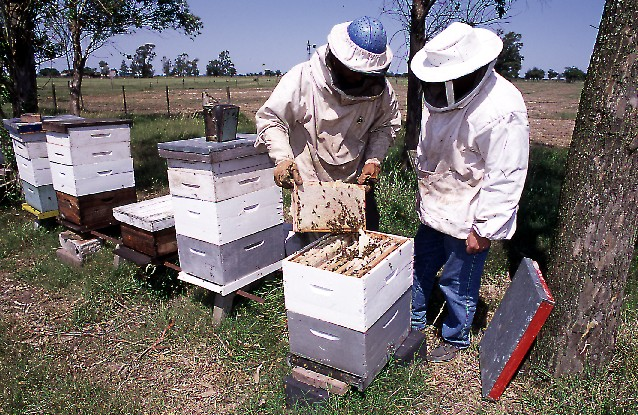
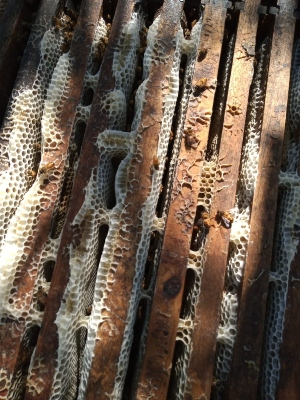
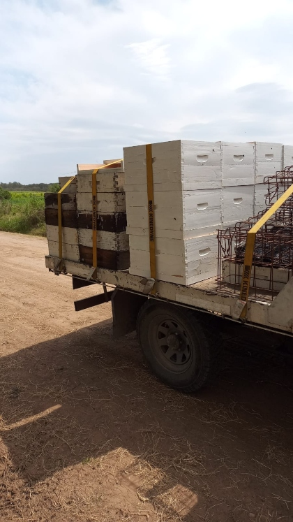
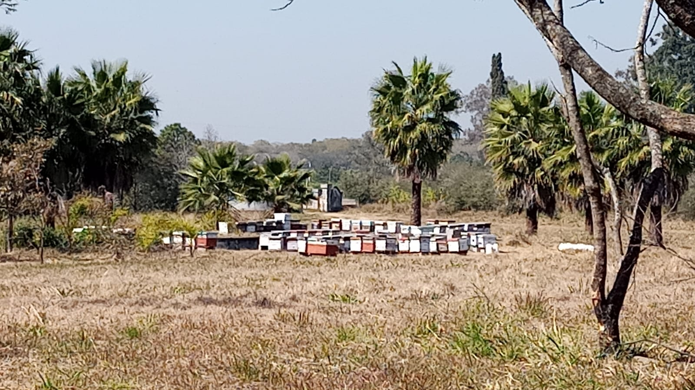

San Pedro
San Pedro aprovecha la calidad de sus suelos y su posición
estratégica para brindar dos tipos de miel. San Pedro, se
caracteriza por ser uno de los principales productores de naranjas
del territorio argentino, gracias a esto, podemos extraer miel de
esa variedad, la cual se caracteriza por su color claro y su sabor
intenso, con un aroma cítrico. Mientras que gracias al Delta, que se
encuentra frente a la ciudad, se extrae la miel de Caa Tay, la cual
es de las más cotizadas del mercado, ya que debido a sus
características, no se soldifica.

Santiago del Estero
Santiago del Estero produce tres distintas variedades de miel, entre
ellas podemos encontrar a la miel de monte, miel de atamisqui y la
exquisita miel de algarrobo. La coescha aquí, comienza en
septiembre, teniendo su fin en noviembre.


Tucumán
Desde Tucumán extraemos la miel de limón, una de las variedades mas
codiciadas a lo largo del mundo. Su color claro característico,
sumado a su sabor citríco, hace de esta variedad exótica. La cosecha
de esta variación tiene lugar desde mediados de agosto hasta fines
de septiembre.
